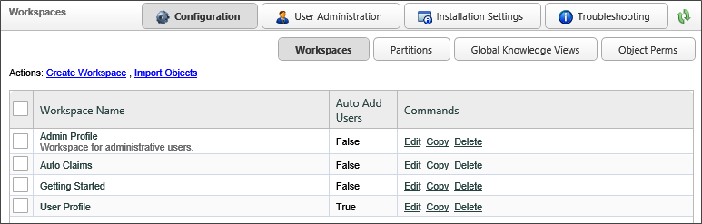
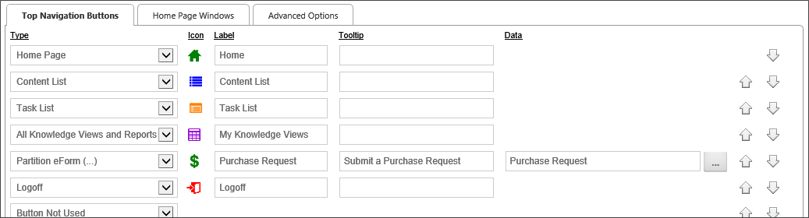

|
|
Lesson Contents | In this Lesson, you will learn how to configure a user Workspace. |
This section of the administration section will allow you to configure the parts of Process Director such as Profiles, Partitions and Global Knowledge Views. The following will explain what each item is and how to configure it.
 When importing XML files from another system, always import the Partition xml file first, then Global Knowledge Views, and last, the Workspaces.
When importing XML files from another system, always import the Partition xml file first, then Global Knowledge Views, and last, the Workspaces.

A workspace defines the appearance and content on a user’s homepage (similar to a portal). A workspace lets you configure multiple ways to display your Process Director Homepage. A workspace consists of a Top Navigation that displays one or more windows, each of which displays the content you want show the users of that Workspace. Once you have created a workspace you will assign users or groups to that workspace. BP Logix recommends that you assign groups, rather than users, because it's easier to administer group assignments. If a user is assigned to more than one workspace, the assigned Workspaces will display as a series of tabs arrayed across the top of the user's home page.
If you click on the Workspaces button, the Workspaces screen will open to display the current list of Workspaces that have been created on the system.

You can edit, copy or delete an existing workspace by clicking on the relevant links in the Commands column of the Workspaces list.
To add a new workspace, create it by clicking on the Create Workspace Actions Link, which will open the configuration screen for the new workspace.
The workspace configuration screen is composed of two separate sections. The top section contains the workspace options.

The bottom section of the workspace configuration screen contains a tabbed interface, containing tabs to configure the Top Navigation Buttons, the Home Page Windows, and the Advanced Options.
To configure a new workspace, edit the following options:
The Workspace Name property is the name that will display in Process Director's interfaced tabs at the top of the screen. As such, the name, while it should be appropriately descriptive, should also be brief, so that it can be displayed without the tab taking up too much screen space.
Type in a brief description of the workspace's purpose and the type of users who should be assigned to it.
Checking this option ensures that, whenever any new user us added to Process Director, the user will automatically be added as a member of this workspace.
You can change the order in which workspace tabs appear on the workspace bar by entering a number into this property.
This property identifies the icon that will appear on the workspace tab, in addition to the text, if desired. To change the icon, click on the default icon to open the Icon Chooser, which will display all of the standard Process Director icons, as well as any custom icons added to the installation. You can select a different icon by simply clicking on the icon you desire. The Icon Chooser will close and the icon you selected will automatically appear in the Workspace Icon property.
The workspace tab can be displayed with only the icon, only the workspace name, or both the icon and workspace name.
The Workspace Tooltip property defines the text you desire to have displayed in a popup tooltip when users place the mouse over the workspace tab.
Clicking on the Assign Users button will open the User Selector dialog box, which enables you to select users to assign to the workspace.

To assign a user, or users, to the workspace. Select the user(s) in the Users in System list box by clicking on them with your mouse. To select multiple contiguous users, you can press and hold the right mouse button while dragging the mouse over the list of users. To select multiple non-contiguous users from the list, press and hold the [CTRL] key on a Windows PC or the [COMMAND] key on a Macintosh PC while clicking on the individual users you wish to select. Once the users are highlighted, add them to the Users in Workspace list box by clicking the Add button.

To remove users from the Users in Workspace list box, select the users you wish to remove from the list box, and click the Remove button.

Clicking on the Assign Groups button will open the Group Selector dialog box, which enables you to select groups to assign to the workspace. This functionality works just like the Assign Users functionality.
Specify the navigation buttons to display at the top of the Homepage. Specify the type of button, the name of the button and optional icon, and if any, the additional configuration for the button. You can also specify the tooltip that displays when the user mouses over the button, as well as in what order the button appears in the nav bar.

These are the available button types.
|
TYPE |
DESCRIPTION |
|---|---|
|
Button Not Used |
This does not display any button. |
|
Home Page |
Links to the Workflow Process/Director |
|
Meta Data Configuration |
Links to the Meta Data configuration. |
|
IT Admin |
Links to the IT Admin configuration. |
|
User Settings |
Links to the currently logged in user profile settings. |
|
Logoff |
Logs off the current user. |
|
Partition Knowledge View (...) |
Links to a specified Knowledge View in a partition. |
| Partition Report (...) |
Links to a specified report in a partition. This option will not appear for users who do not have the Advanced Reporting component. |
| Partition Chart(...) | Links to a specified Chart in a partition. |
| Partition Dashboard(...) | Links to a specified Dashboard in a partition. |
|
Partition Form (...) |
Links to a specific Form Definition in a partition. |
|
Specific URL (...) |
Links to a specific URL (e.g. http://www.google.com). |
|
All Knowledge Views and Reports |
Links to a Global Knowledge View that lists all Knowledge Views and Reports to which the current logged in user has permissions. |
|
Content List |
Links to a Content List to which the current logged in user has permissions. |
|
Find Forms With Value |
Links to a Knowledge View that will search any form field on any form. |
|
Forms I Can Submit |
Links to a knowledge view that returns Forms I can Submit. |
|
Running Processes |
Links to a Knowledge View that returns a list of running processes. |
|
Task List |
Links to a Knowledge View that returns a list of tasks that are assigned to you. |
The Icon property identifies the icon that will appear on the navigation button. Clicking on the default iron will open the Icon Chooser dialog box, from which you can select the icon you desire to display as the button icon.
The label property specifies the text that will appear on the navigation button.
The Tooltip property defines the text you desire to have displayed in a popup tooltip when users place the mouse over the navigation button.
The Data property is used for navigation buttons that point to a Content List item. The property consists of a Picker control from which you can choose the Content List item to which you wish to navigate.
You can change the order of the workspace navigation buttons using the arrow buttons to move a button up or down in the button list.
Specify the Homepage Windows by selecting the window template and associate a type for each window. Each line will correspond with the window number. Each window can be defined to display different content.
When multiple portlets are displayed in a workspace, each portlet is divided by splitter bars. The user can manually drag and drop the splitter bars to new positions to resize the portlets. Additionally, the splitter bars will show on mobile devices with thicker bars to allows resizing the bars easier on touchscreens. The width of the splitter bar can be customized using the SplitterWidth custom variable.

The first selection you can make is the desired page layout. The row of radio buttons illustrate the number and arrangement of the portlets that will appear on the page. A portlet is a window on a page inside of which is displayed a Content List item, such as a report, Form, report, etc. You can select to display up to four portlets on the home page in a variety of arrangements, each of which is illustrated by a small sample page diagram.
Below the selection for the layout of the portlets, a list of Portlet configuration controls will appear, based on the layout you select.
These are the available portlet types you can select from the Type property Dropdown controls.
These are the available button types.
|
TYPE |
DESCRIPTION |
|---|---|
|
Meta Data Configuration |
Links to the Meta Data configuration |
|
IT Admin |
Links to the IT Admin configuration |
|
User Settings |
Links to the currently logged in user profile settings. |
|
Logoff |
Logs off the current user |
|
Partition Knowledge View (…) |
Links to a specific Knowledge View in a partition |
|
Partition Form (…) |
Links to a specific Form Definition in a partition |
|
Specific URL (…) |
Links to a specific URL (e.g. http://www.google.com). You may type the actual URL, or use a custom variable to provide the URL by using the syntax "{customvar:VAR_NAME}", where VAR_NAME is the name of the custom variable you create. Refer to the Developer's Guide for information on how to create custom variables. |
|
All Knowledge Views and Reports |
Links to a Global Knowledge View that lists all Knowledge Views and Reports the current logged in user has permission to. |
|
Content List |
Links to a Content List the current logged in user has permission to. |
|
Find Forms With Value |
Links to a Knowledge View that will search any form field on any form. |
|
Forms I Can Submit |
Links to a knowledge view that returns Forms I can Submit |
|
Running Processes |
Links to a Knowledge View that returns a list of running processes |
|
Task List |
Links to a Knowledge View that returns a list of tasks that are assigned to you. |
The Data property for each window type will appear as a Picker control, from which you can select a Content List item that is appropriate for the selected Type property.
You can change the order of the workspace navigation buttons using the arrow buttons to move a button up or down in the button list.
Specify the advanced options. A specific logo and link can be selected for this profile.

Enter a URL of an image to display in place of the default BP Logix logo. For best results, the logo image should be sized to approximately 120x30 pixels.
Enter the URL to which the user should be directed when clicking the logo image. The default link is to the BP Logix web site.
Hotlinks can be used to directly access a specific workspace on the system. To access a workspace directly via a URL, use the following syntax in the address bar of your browser:
http://server_name/home.aspx?profile=profile_name
Where server_name is the host where Process Director is installed and profile_name is the name of the workspace. A user must be a member of the workspace for the page to be displayed.